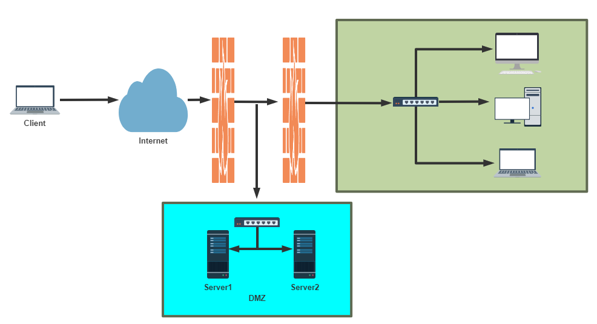
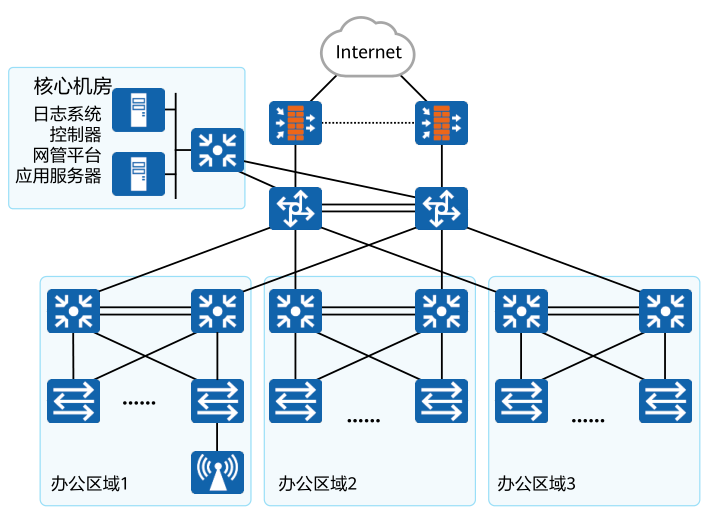
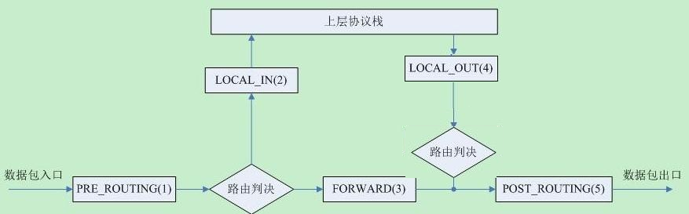
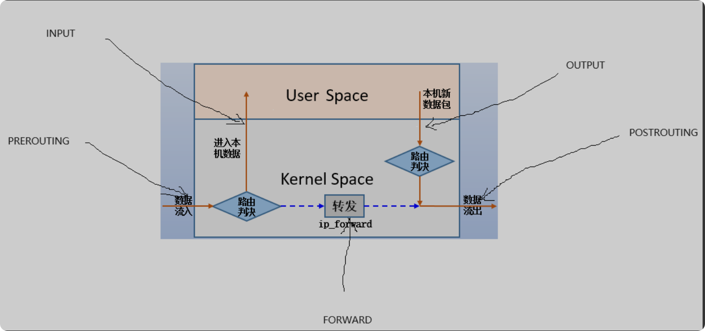

安全技术和防火墙
1 安全技术和防火墙
1.1 安全技术
入侵检测系统（Intrusion Detection Systems）：特点是不阻断任何网络访问，量化、定位来自内外网络的威胁情况，主要以提供报警和事后监督为主，提供有针对性的指导措施和安全决策依据,类似于监控系统一般采用旁路部署方式
入侵防御系统（Intrusion Prevention System）：以透明模式工作，分析数据包的内容如：溢出攻击、拒绝服务攻击、木马、蠕虫、系统漏洞等进行准确的分析判断，在判定为攻击行为后立即予以阻断，主动而有效的保护网络的安全，一般采用在线部署方式
防火墙（ FireWall ）：隔离功能，工作在网络或主机边缘，对进出网络或主机的数据包基于一定的规则检查，并在匹配某规则时由规则定义的行为进行处理的一组功能的组件，基本上的实现都是默认情况下关闭所有的通过型访问，只开放允许访问的策略,会将希望外网访问的主机放在DMZ(demilitarized zone)网络中
防水墙（Waterwall）：与防火墙相对，防水墙是一种防止内部信息泄漏的安全产品。它利用透明加解密，身份认证，访问控制和审计跟踪等技术手段，对涉密信息，重要业务数据和技术专利等敏感信息的存储，传播和处理过程，实施安全保护；最大限度地防止敏感信息泄漏、被破坏和违规外传，并完整记录涉及敏感信息的操作日志，以便日后审计。

1.2 防火墙的分类
按保护范围划分：
主机防火墙：服务范围为当前一台主机
网络防火墙：服务范围为防火墙一侧的局域网
按实现方式划分:
硬件防火墙：在专用硬件级别实现部分功能的防火墙；另一个部分功能基于软件实现
软件防火墙：运行于通用硬件平台之上的防火墙的应用软件，Windows 防火墙 ISA –> ForefrontTMG
按网络协议划分：
网络层防火墙：OSI模型下四层，又称为包过滤防火墙
应用层防火墙/代理服务器：proxy 代理网关，OSI模型七层
包过滤防火墙
网络层对数据包进行选择，选择的依据是系统内设置的过滤逻辑，被称为访问控制列表（ACL），通过检查数据流中每个数据的源地址，目的地址，所用端口号和协议状态等因素，或他们的组合来确定是否允许该数据包通过
优点：对用户来说透明，处理速度快且易于维护
缺点：无法检查应用层数据，如病毒等
应用层防火墙
应用层防火墙/代理服务型防火墙，也称为代理服务器（Proxy Server)将所有跨越防火墙的网络通信链路分为两段内外网用户的访问都是通过代理服务器上的“链接”来实现
优点：在应用层对数据进行检查，比较安全
缺点：增加防火墙的负载
提示：现实生产环境中所使用的防火墙一般都是二者结合体，即先检查网络数据，通过之后再送到应用层去检查
1.3 防火墙的作用
防火墙的基本功能是监控和控制进出网络的数据流。它根据预先定义的安全规则来审查每一个数据包，这些规则可能基于IP地址、端口号、协议类型甚至是具体的内容。任何不符合规则的数据包都会被防火墙拦截，从而防止潜在的攻击和未经授权的访问。
除了基本的包过滤功能，现代防火墙还具备更高级的安全特性，如入侵检测系统（IDS）、入侵防御系统（IPS）和虚拟专用网络（VPN）等。这些功能使得防火墙成为了网络安全的第一道防线。

2 Linux防火墙的基本认识
2.1 Netfilter
Linux防火墙是由Netfilter组件提供的，Netfilter工作在内核空间，集成在linux内核中
Netfilter 是Linux 2.4.x之后新一代的Linux防火墙机制，是linux内核的一个子系统。Netfilter采用模块化设计，具有良好的可扩充性，提供扩展各种网络服务的结构化底层框架。Netfilter与IP协议栈是无缝契合，并允许对数据报进行过滤、地址转换、处理等操作
内核中netfilter相关的模块
1 | [root@centos8 ~]#grep -m 10 NETFILTER /boot/config-4.18.0-193.el8.x86_64 |
2.2 防火墙工具介绍
2.2.1 iptables
由软件包iptables提供的命令行工具，工作在用户空间，用来编写规则，写好的规则被送往netfilter，告诉内核如何去处理信息包
范例：安装iptables的service包
1 | [root@centos8 ~]#dnf -y install iptables-services |
2.2.2 firewalld
从CentOS 7 版开始引入了新的前端管理工具
软件包：
firewalld
firewalld-config
管理工具：
firewall-cmd 命令行工具
firewall-config 图形工作
1 | #rocky默认安装 |
2.2.3 nftables
此软件是CentOS 8 新特性,Nftables最初在法国巴黎的Netfilter Workshop 2008上发表，然后由长期的netfilter核心团队成员和项目负责人Patrick McHardy于2009年3月发布。它在2013年末合并到Linux内核中，自2014年以来已在内核3.13中可用。
它重用了netfilter框架的许多部分，例如连接跟踪和NAT功能。它还保留了命名法和基本iptables设计的几个部分，例如表，链和规则。就像iptables一样，表充当链的容器，并且链包含单独的规则，这些规则可以执行操作，例如丢弃数据包，移至下一个规则或跳至新链。
从用户的角度来看，nftables添加了一个名为nft的新工具，该工具替代了iptables，arptables和ebtables中的所有其他工具。从体系结构的角度来看，它还替换了内核中处理数据包过滤规则集运行时评估的那些部分
1 | [root@rocky86 ~]# rpm -q nftables |
CentOS 8 支持三种防火墙服务
1 | [root@centos8 ~]#systemctl status iptables.service |
ubuntu 中的防火墙工具
1 | #系统层面状态 |
2.3 netfilter 中五个勾子函数和报文流向
Netfilter在内核中选取五个位置放了五个hook(勾子) function(INPUT、OUTPUT、FORWARD、PREROUTING、POSTROUTING)，而这五个hook function向用户开放，用户可以通过一个命令工具（iptables）向其写入规则，内核中的勾子函数根据预设的规则进行工作，达到对流经的数据包进行过滤，拒绝，转发等功能。
由信息过滤表（table）组成，包含控制IP包处理的规则集（rules），规则被分组放在链（chain）上


特别说明
从 Linux kernel 4.2 版以后，netfilter 在prerouting 前加了一个 ingress 勾子函数。可以使用这个新的入口挂钩来过滤来自第2层的流量，这个新挂钩比预路由要早，基本上是 tc 命令（流量控制工具）的替代品。
三种报文流向
流入本机：PREROUTING –> INPUT–>用户空间进程
流出本机：用户空间进程 –>OUTPUT–> POSTROUTING
转发：PREROUTING –> FORWARD –> POSTROUTING
INPUT 链
- 该链用于处理进入本地系统的流量（即目标是本机的流量）。
- 所有到达本机的流量都会经过 INPUT 链进行检查 适用于例如 SSH、HTTP 等服务的连接请求
OUTPUT 链
- 该链用于处理从本地系统发出的流量（即源是本机的流量）。
- 所有由本机发出的流量都会经过 OUTPUT 链 适用于例如从本机访问外部网站的请求
FORWARD 链
- 该链用于处理被路由通过本机的流量（即流量不会到达本机，而是转发到其他网络）。
- 此链仅适用于做路由的机器 适用于例如路由器转发的流量
PREROUTING 链
- 该链用于在路由决策之前处理流量。
- 通常用于目标地址转换（DNAT），在数据包到达路由前修改其目标地址
- 适用于例如网络地址转换（NAT）时，修改目标地址的规则
POSTROUTING 链
- 该链用于在路由决策之后处理流量。
- 通常用于源地址转换（SNAT），在数据包离开本机前修改源地址
- 例如 NAT 中修改源地址的规则